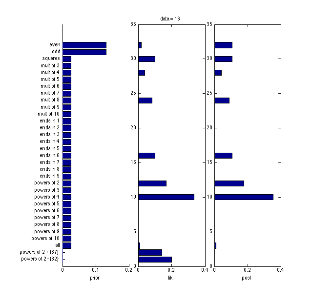
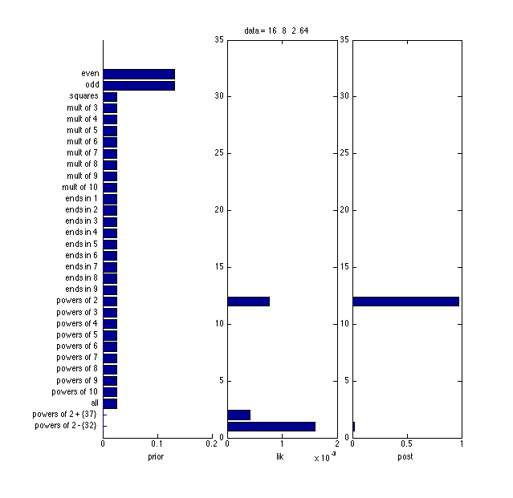
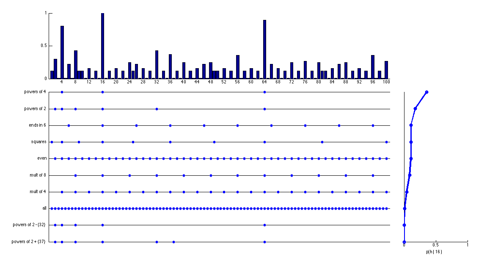

Josh Tenenbaum's Number Game
Contents
function numbersGame
first = 1; last = 100;
hypFn = @mathHypothesesSmall;
priorFn = @mathPriorSmall;
likelihoodFn = @likelihood;
posteriorFn = @posterior;
postPredFn = @postPredictive;
priorPredFn = @priorPredictive;
hypSpace = hypFn();
inconcept = buildExtensionTable(hypSpace);
makePlots();
  
Hypothesis Spaces
A small hypothesis space
function hypSpace = mathHypothesesSmall()
hypSpace = [ evenOdd()
predicateBased( @(x)(x == round(sqrt(x)).^2),'squares')
multiples(3:10)
endingIn(1:9)
powers(2:10)
predicateBased(@(x)(x==x),'all')
compose(powers(2),explicitSet([37]),@union,' +')
compose(powers(2),explicitSet([32]),@setdiff,' -')
];
fields = {'extension','name','size'};
hypSpace = cell2struct(hypSpace,fields,2);
end
Tenenbaum's original hypothesis space with 34 mathematical and 5050 interval
function hypSpace = tenenbaumHypSpace()
hypSpace = [ evenOdd()
predicateBased( @(x)(x == round(sqrt(x)).^2),'squares')
predicateBased( @(x)(x == round(x.^(1/3)).^3),'cubes')
predicateBased( @(x)(isprime(x)),'primes')
multiples(3:12)
powers(2:10)
endingIn(0:9)
allContiguousIntervals()
];
fields = {'extension','name','size'};
hypSpace = cell2struct(hypSpace,fields,2);
end
Priors
function prior = mathPriorSmall(hypSpace)
prior = [0.5 0.5 0.1*ones(1,28) 0.001 0.001];
assert(length(prior) == size(hypSpace,1));
prior = prior ./ sum(prior);
end
function prior = tenenbaumPrior(hypSpace)
lambda = 2/3;
math = (2/3)*ones(1,34);
sizes = [hypSpace.size];
sizes = sizes(35:end);
ints = exp(gammalogprob(struct('a', 2, 'b', 10), sizes));
ints = (1/3)*ints;
prior = [math ints];
prior = prior ./ sum(prior);
end
Likelihoods
function L = likelihood(D,hypSpace)
hypSpaceSize = size(hypSpace,1);
n = length(D);
lik = zeros(n,hypSpaceSize);
for i=1:n
lik(i,:) = inconcept(D(i),:) ./ [hypSpace.size];
end
L = prod(lik,1);
end
function LL = logLikelihood(D,hypSpace)
hypSpaceSize = size(hypSpace,1);
n = length(D);
llik = zeros(n,hypSpaceSize);
for i=1:n
llik(i,:) = log((inconcept(D(i),:) ./ [hypSpace.size])+ eps);
end
LL = sum(llik,1);
end
Posteriors
function post = posterior(D,hypSpace)
post = priorFn(hypSpace) .* likelihoodFn(D,hypSpace);
post = post / sum(post);
end
function post = posteriorLL(D,hypSpace)
logLik = likelihoodFn(D,hypSpace);
logPrior = log(priorFn(hypSpace));
logNumerator = logLik + logPrior;
post = exp(logNumerator);
post = post / sum(post);
end
Predictive
function pred = postPredictive(post)
pred = inconcept * post(:);
end
function pred = priorPredictive(hypSpace)
prior = priorFn(hypSpace);
cl = zeros(size(inconcept));
for col=1:size(hypSpace,1)
ext = hypSpace(col).extension;
cl(ext,col) = inconcept(ext,col)./hypSpace(col).size;
end
pred = cl(first:last,:)*prior';
end
Helper Functions
function inconcept = buildExtensionTable(hypSpace)
hypSpaceSize = size(hypSpace,1);
inconcept = zeros(last-first+1,hypSpaceSize);
for h=1:hypSpaceSize
hyp = hypSpace(h).extension;
inconcept(hyp,h) = 1;
end
end
Display Functions
function makePlots()
close all;
data = [16,8,2,64];
printPmtkFigure('joshHypSpace');
plotPriorLikPost(16, hypSpace, priorFn, likelihoodFn,posteriorFn);
printPmtkFigure('joshPriorLikPost16');
plotPriorLikPost(data, hypSpace, priorFn, likelihoodFn,posteriorFn);
printPmtkFigure('joshPriorLikPostAll');
visualizePredictive(inconcept,[16],hypSpace);
printPmtkFigure('joshPredictive16');
end
function displayBestHyps(howMany,post)
[H, idx] = sort(post,'descend');
names = {hypSpace.name};
fprintf('Top Posterior Hypotheses');
fprintf('\n%1s %9s\n\n','Probability','Name');
for i=1:1:howMany
names = {hypSpace.name};
fprintf('%1s\t\t\t %1s\n',num2str(H(i),'%6.5f'),cell2mat(names(idx(i))));
end
end
function displayHypothesisSpace(inconcept,hypSpace)
fig = figure;
ax = axes('Parent',fig,'XTick',1:size(hypSpace,1),'Position',[0.1,0.25,0.8,0.70]);
axis([1,size(hypSpace,1),first-1,last+1]);
hold on;
imagesc(inconcept,'Parent',ax);
colormap(gray);
xticklabelRot({hypSpace.name}, 90, 8,-1);
title('hypothesis space')
end
function plotPrior(hypSpace)
H = size(hypSpace,1);
prior = priorFn(hypSpace);
prior = prior(end:-1:1);
names = {hypSpace.name};
names = names(end:-1:1);
fig = figure('Color',[1 1 1],'Position',[500 100 300,600]);
axes('Parent',fig,'YTickLabel',names,'YTick',1:H,'Position',[0.4 0.12 0.50 0.8]);
hold on;
barh(prior);
axis([0 1 0 H+1]);
set(gca,'XTick',[0,0.5,1]);
xlabel('p(h)');
end
function plotDistribution(data,hypSpace,pdf,isLik)
H = size(hypSpace,1);
scrsz = get(0,'ScreenSize');
fig = figure('Color',[1 1 1],'Position',[20 50 5*scrsz(3)/10 8*scrsz(4)/10]);
n = length(data);
height = 0.8; buffer = 0.03; y = 0.12; extraGap = 0.1;
border = 0.1; width = (1-2*border - extraGap - buffer*(n-1))/n;
for i=1:length(data)
if(i==1)
names = {hypSpace.name}; names = names(end:-1:1);
ax = axes('Parent',fig,'YTickLabel',names,'YTick',1:H,'Position',[border+extraGap,y,width,height]);
else
ax = axes('Parent',fig,'YTick',[],'Position',[border+extraGap+(i-1)*(width+buffer),y,width,height]);
end
hold on;
lik = pdf(data(1:i),hypSpace);
lik = lik(end:-1:1);
barh(lik,'Parent',ax);
if(isLik)
xlabel(['p(' num2str(data(1:i)) ' | h)']);
else
xlabel(['p(h | ' num2str(data(1:i)) ' )']);
end
end
end
function plotPriorLikPost(data, hypSpace, priorFn, likFn, postFn)
H = size(hypSpace,1);
prior = priorFn(hypSpace);
prior = prior(end:-1:1);
scrsz = get(0,'ScreenSize');
fig = figure('Color',[1 1 1],'Position',[20 50 5*scrsz(3)/10 8*scrsz(4)/10]);
n = 3;
height = 0.8; buffer = 0.03; y = 0.12; extraGap = 0.1;
border = 0.1; width = (1-2*border - extraGap - buffer*(n-1))/n;
names = {hypSpace.name}; names = names(end:-1:1);
ax = axes('Parent',fig,'YTickLabel',names,'YTick',1:H,'Position',[border+extraGap,y,width,height]);
hold on;
barh(prior, 'Parent', ax);
xlabel('prior');
i = 2; ax = axes('Parent',fig,'YTickLabel',names,'YTick',1:H,'Position',[border+extraGap+(i-1)*(width+buffer),y,width,height]);
lik = likFn(data,hypSpace);
lik = lik(end:-1:1);
barh(lik,'Parent',ax);
xlabel('lik');
title(sprintf('data = %s', num2str(data)))
i = 3; ax = axes('Parent',fig,'YTick',1:H,'YtickLabel',{},'Position',[border+extraGap+(i-1)*(width+buffer),y,width,height]);
post = postFn(data,hypSpace);
post = post(end:-1:1);
barh(post,'Parent',ax);
xlabel('post');
end
function visualizePredictive(inconcept,data,hypSpace)
post = posteriorFn(data,hypSpace);
pred = postPredFn(post);
scrsz = get(0,'ScreenSize');
fig = figure('Color',[1 1 1],'Position',[20 50 9*scrsz(3)/10 8*scrsz(4)/10]);
plotBar;
probs = plotHyps;
plotPost;
function plotBar
barAxLoc = [0.1,0.7,0.7,0.25];
barAx = axes('Parent',fig,'XTick',first-1+4:4:last,'YTick',0:0.5:1,'Position',barAxLoc);
hold on;
bar(pred,'Parent',barAx);
axis([first-1,last+1,0,1]);
end
function probs = plotHyps
consistentHyps = 1:size(hypSpace,1);
for i=1:length(data)
consistentHyps = intersect(consistentHyps,find(inconcept(data(i),:) == 1));
end
names = {hypSpace.name};
names = names(consistentHyps);
[probs ndx] = sort(post(consistentHyps));
names = names(ndx);
consistentHyps = consistentHyps(ndx);
hypAxLoc = [0.1,0.08,0.7,0.57];
hypAx = axes('Parent',fig,'XTick',[],'YTick',1:length(names),'XColor',[1 1 1],'YTickLabel',names,'Position',hypAxLoc);
hold on;
for i=1:length(names)
h = consistentHyps(i);
hyp = hypSpace(h).extension;
fplot(@(x)i,[first-1,last+1,1,length(names)+ 0.02],'-k');
hold on;
y = i*ones(length(hyp));
plot(hyp,y,'.b','MarkerSize',20);
end
end
function plotPost
postAxLoc = [0.83,0.08,0.13,0.57];
postAx = axes('Parent',fig,'XTick',0:0.5:1,'YTick',[],'Position',postAxLoc);
xlabel(['p(h | ' num2str(data) ' )']);
hold on;
plot(probs,1:length(probs),'-o','linewidth',3);
axis([0,1,1,length(probs)]);
end
end
Hypothesis Building Functions
function hypotheses = evenOdd()
even = first+1:2:last;
odd = first:2:last;
hyps = [{even};{odd}];
names = [{'even'};{'odd'}];
sizes = [ {size(even,2)} ; {size(odd,2)}];
hypotheses = [hyps names sizes];
end
function hypotheses = multiples(ints)
n = length(ints);
hyps = cell(n,1);
names = cell(n,1);
sizes = cell(n,1);
for i=1:n
m = ints(i);
xmax = ceil(last/m);
hyps{i,1} = intersect(first:last, m*(first:xmax));
names{i,1} = sprintf('mult of %d', m);
sizes{i,1} = size(hyps{i,1},2);
end
hypotheses = [hyps names sizes];
end
function hypotheses = endingIn(ints)
fst = first - 1;
lst = last - 10;
n = length(ints);
hyps = cell(n,1);
names = cell(n,1);
sizes = cell(n,1);
for i=1:n
m = ints(i);
if m==0
hyps{i,1} = (fst+10:10:lst+10) + m;
else
hyps{i,1} = (fst:10:lst) + m;
end
names{i,1} = sprintf('ends in %d', m);
sizes{i,1} = size(hyps{i,1},2);
end
hypotheses = [hyps names sizes];
end
function hypotheses = powers(pows)
n = length(pows);
hyps = cell(n,1);
names = cell(n,1);
sizes = cell(n,1);
for i=1:n;
m = pows(i);
xmax = ceil(log(last)/log(m));
hyps{i,1} = intersect(first:last, m.^(first:xmax));
names{i,1} = sprintf('powers of %d', m);
sizes{i,1} = size(hyps{i,1},2);
end
hypotheses = [hyps names,sizes];
end
function hypothesis = explicitSet(set)
hypothesis = [{set} {[' {' num2str(set) '}']} {size(set,2)}];
end
function hypotheses = compose(hyp1,hyp2,operator,str)
n = size(hyp1,1);
hyps = cell(n,1);
names = cell(n,1);
sizes = cell(n,1);
for i=1:n
hyps{i,1} = operator(cell2mat(hyp1(i,1))',cell2mat(hyp2(i,1))','rows')';
names{i,1} = strcat(hyp1{i,2}, str, hyp2{i,2});
sizes{i,1} = size(hyps{i,1},2);
end
hypotheses = [hyps names sizes];
end
function hypothesis = predicateBased(predicate,name)
range = first:last;
logicalNDX = predicate(range);
size = sum(logicalNDX);
hyp = range(logicalNDX);
hypothesis = [{hyp} {name} {size}];
end
function hypotheses = allContiguousIntervals()
i = 1;
n = last*(last+1)/2;
hyps = cell(n,1);
names = cell(n,1);
sizes = cell(n,1);
for s = first:last
for e=s:last
hyps{i,1} = s:e;
names{i,1} = sprintf('interval %d..%d', s, e);
sizes{i,1} = size(hyps{i,1},2);
i = i+1;
end
end
hypotheses = [hyps names sizes];
end
function hypotheses = contiguousIntervalsOflength(lengths)
i = 1;
n = sum(last - lengths + 1);
hyps = cell(n,1);
names = cell(n,1);
sizes = cell(n,1);
for len=1:length(lengths)
for n=first:last
m = n+len-1;
if(m>last)
break
end
hyps{i,1} = n:m;
names{i,1} = sprintf('interval %d..%d', n, m);
sizes{i,1} = size(hyps{i,1},2);
i = i+1;
end
end
hypotheses = [hyps names sizes];
end
end